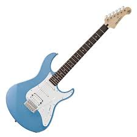
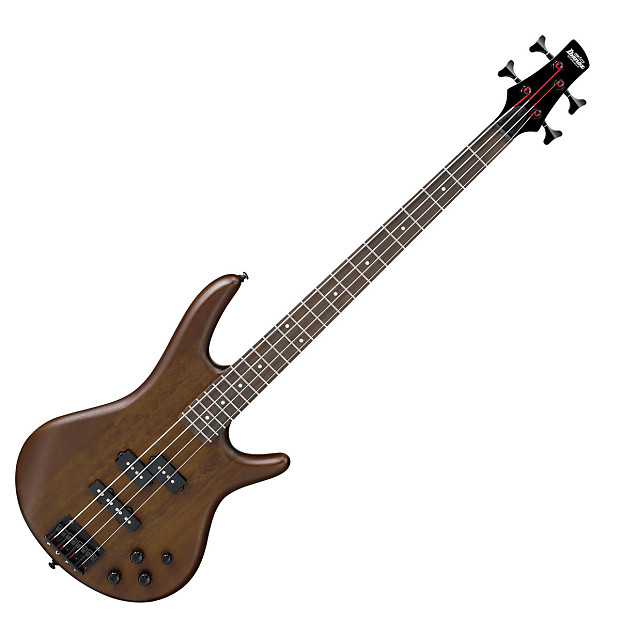
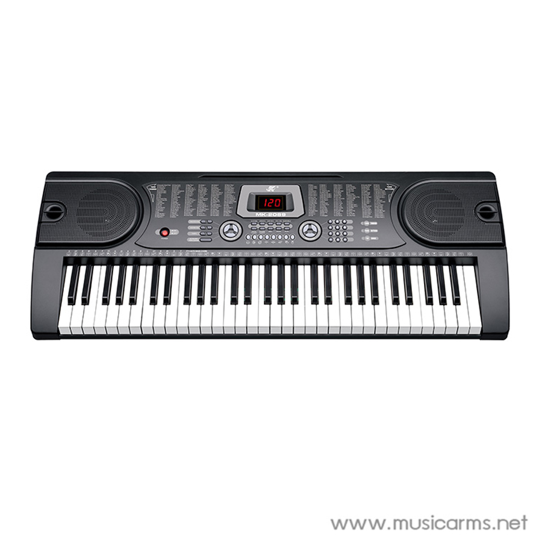
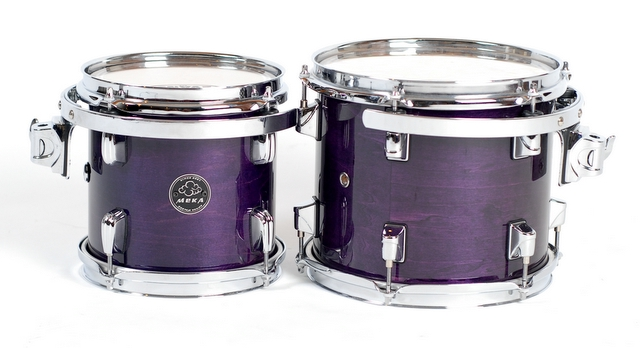
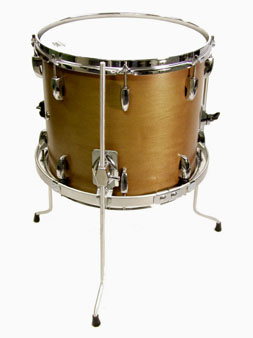
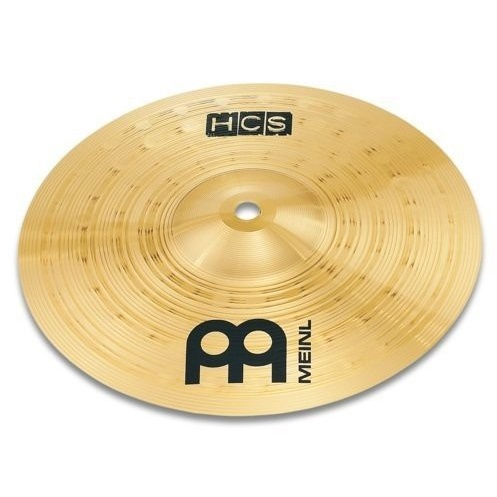
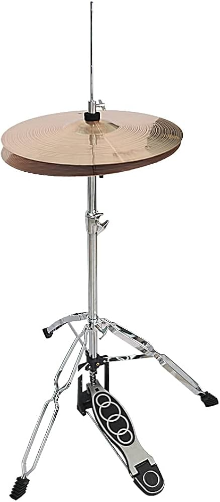
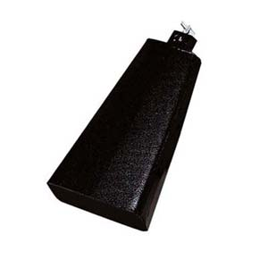
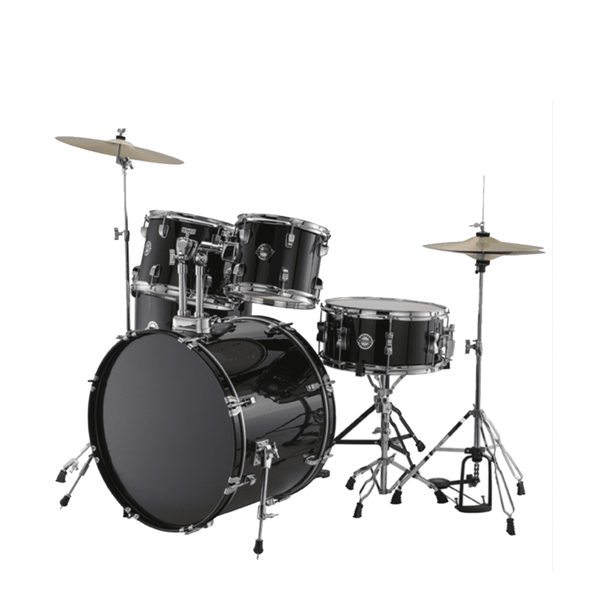

การบรรเลงดนตรีสากล
วงสตริง จัดเข้าอยู่ในประเภทวงดนตรีร็อกที่มีต้นกำเนิดมาจากประเทศอังกฤษ เผยแพร่เข้ามาเป็นที่นิยมในประเทศไทยผ่านทางภาพยนต์และแผ่นเสียง วงสตริงวงแรกที่คนรู้จัก คือ วงเดอะชาโดว์ (The Shadows) เผยแพร่เข้ามาในประเทศไทยเมื่อปี พ.ศ.2503 จากนั้นจึงเกิดการตั้งวงดนตรีประเภทนั้นตามมาอีกเป็นจำนวนมาก และมักเรียกประเภทของวงว่า วงชาโดว์ ส่วน วงสตริง จะเรียกกันเฉพาะในประเทศไทยเท่านั้น เครื่องดนตรีที่ประสมในวงสตริง เป็นเครื่องที่สะดวกต่อการขนย้ายและใช้บรรเลงหรือใช้ประกอบการขับร้องก็ได้ ซึ่งจะประกอบไปด้วยเครื่องดนตรีดังต่อไปนี้

กีต้าร์ไฟฟ้า (Electric Guitar) กีตาร์ไฟฟ้าในวงสตริงจะมีอยู่ด้วยกัน 2 ตัว โดยกีตาร์ไฟฟ้าตัวหนึ่งเรียกว่า กีตาร์นำวง (Lead Guitar) ทำหน้าที่เล่นแนวทำนองตอนที่ขึ้นอินโทร (Intro) ตอนที่เล่นโซโล หรือแอดลีบ (Ad Lib) เล่นทำนองสอดประสาน (Counterpoint) และทำนองตอนลงท้าย (Coda) ส่วนกีตาร์ไฟฟ้าอีกตัวหนึ่งเรียกว่า กีตาร์คอร์ด (Chord Guitar) ทำหน้าที่เล่นคอร์ดประสานเสียงในแนวตั้งกับทำนองหลัก

กีตาร์เบสไฟฟ้า (Electric Bass Guitar) ดำเนินทำนองของจังหวะหรอตามรูปแบบและลักษณะของบทเพลง

คีย์บอร์ด (Keyboard) ในกรณีที่มีเครื่องคีย์บอร์ด คีย์บอร์ดจะใช้สำหรับบรรเลงกลุ่มเสียง เช่นเสียงคอร์ด หรือกลุ่มเสียงของเครื่องดนตรีสากลต่างๆ เป็นต้น เป็นทั้งหัวหน้าวงทำงานของเพลงต่างๆให้เสียงครบเครื่อง หรืออาจใช้เล่นเสียงประสานแบบกระจายคอร์ด (Arpeggio) ได้อีกด้วย

กลองชุดใหญ่ (Bass Drum)

กลองแนร์ (Snare Drum)

กลองทอม (Tom-Tom)

ฟลอร์ทอม (Floor Tom)

ฉาบ (Cymbal)

ไฮแฮท (Hihat)

และคาวเบลล์ (Cowbell)

กลองชุด (Drum Set)